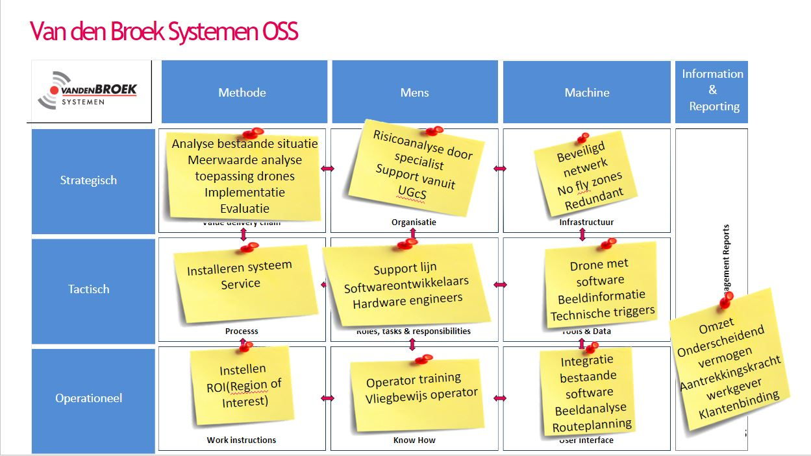
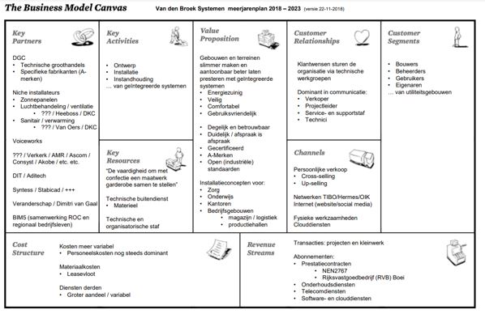

Design Thinking is een iteratief proces dat gebruikt wordt om complexe problemen (ook wel ‘wicked problems’ genoemd) op te lossen. Daarbij staat de gebruiker en zijn behoeftes centraal; Design Thinking draait om het begrijpen van de mensen voor wie een product of dienst ontwikkeld wordt.
Het klinkt misschien logisch om de behoefte van de klant centraal te stellen, maar dat is het in de praktijk vaak niet. Mensen zijn erg geneigd om in patronen en aannames te denken. Het is ontzettend lastig om die aannames naast ons neer te leggen en vanuit de behoefte van een gebruiker tot innovatieve oplossingen te komen. Design Thinking wordt vaak aangeduid als ‘outside the box thinking’. Ontwerpers proberen nieuwe manieren van denken te ontwikkelen en zich los te maken van de dominante of meer gebruikelijke probleemoplossingsmethoden.
Design Thinking is zowel een manier van denken en werken, als een verzameling van praktische methodes die je stimuleren nieuwe alternatieven te onderzoeken om zo tot betere oplossingen te komen.
 Aan de hand van de workshop over design thinking heb ik zelf nog even onderzoek gedaan om het in een document uit te kunnen werken. Design thinking kan verdeeld worden aan de hand van 5 fases:
Aan de hand van de workshop over design thinking heb ik zelf nog even onderzoek gedaan om het in een document uit te kunnen werken. Design thinking kan verdeeld worden aan de hand van 5 fases:
In deze fase ontwikkel je empathie voor alle betrokkenen bij een complex probleem, het doel van deze fase is om aannames en vooroordelen achter je te laten. Aan de hand van deze empathie kan de basis gelegd worden voor een oplossing.
In deze fase ga je aan de slag met de vergaarde informatie uit de empathie fase. Alle informatie wordt geanalyseerd en in deze fase samengevoegd, aan de hand van deze analyse wordt het kernprobleem vastgesteld.
Het hoofddoel van deze fase is om zoveel mogelijk ideeën te bedenken met betrekking tot het oplossen van het kernprobleem. Nu je alle betrokken goed begrijpt(empathiefase) en het kernprobleem bekend is (definitiefase), ga je proberen om te brainstormen naar oplossingen voor dit kernprobleem. Dit kun je doen aan de hand van verschillende methodieken.
In deze fase ga je een prototype realiseren van de oplossing die in de vorige fase bedacht is, het doel hiervan is om op experimentele wijze de best mogelijke oplossing te ontdekken. Het resultaat van deze fase is om goed inzicht te krijgen in de beperkingen van de oplossing en om te ontdekken hoe de betrokken reageren bij een bepaalde oplossing.
De laatste fase van de Design Thinking is het testen van het eindproduct. Ondanks dat dit de laatste fase is, is het vaak niet het einde van het proces omdat design thinking een iteratief proces is. Door dit iteratieve proces wordt de oplossing steeds beter doordat het op zichzelf voortborduurt.
In workshop 2 was gastspreker Geert Rensen te gast, hij kwam een aantal business termen voorleggen die voor mij nog volledig onbekend waren. Dit was voor mij de basis van Smart Business. Deze methodes werden toegelicht aan de hand van een casus, waarin wij een praktijkvoorbeeld uit voorgelegd krijgen en deze moeten uitwerken aan de hand van de methodieken van Geert. Zo is er eerst gebrainstormd en een Business Model Canvas opgesteld aan de hand van de huidige situatie bij AXA: (mocht het niet leesbaar zijn --> in het document is het uitgewerkt)
 Daarna kregen we de opdracht om een veranderplan op te stellen aan de hand van de casus van AXA, en vanwege de minor moesten we proberen om Smart oplossingen te bedenken om de relatie tussen de business en de Smart Industry te kunnen leggen. Ons veranderplan is uitgelegd in onderstaand document:
Daarna kregen we de opdracht om een veranderplan op te stellen aan de hand van de casus van AXA, en vanwege de minor moesten we proberen om Smart oplossingen te bedenken om de relatie tussen de business en de Smart Industry te kunnen leggen. Ons veranderplan is uitgelegd in onderstaand document:
De doel van deze workshop is om kennis te maken met het TOM-model (Target Operating Model) zodanig dat dit model toegepast kan worden op een eigen project/opdracht. Hiervoor dien je in staat te zijn om benodigde aanpassingen, bottlenecks, kansen en bedreigen vast te stellen bij veranderingen in de organisatie. Aan de hand van deze analyse dien je innovaties afkomstig uit het TOM-model door te kunnen voeren binnen de desbetreffende organisatie. Het TOM-model is stap voor stap uitgelegd en vervolgens aan de hand van wat praktijkvoorbeelden toegelicht.
Onderstaand het TOM-model hoe deze toegepast is bij ons project bij Van den Broek:

Toepassen TOM-model
Voor ons project hebben wij onderzoek gedaan naar de toepasbaarheid van autonome drones bij het beveiligen van bedrijfsterreinen. Hiervoor zijn wij gaan onderzoeken wat er allemaal mogelijk was binnen de wetgeving, al snel kwamen we tot de conclusie dat er wel het een en ander mogelijk was. Hierdoor hebben we gelijk het TOM-model toegepast om te analyseren wat de implementatie van autonome drones voor een invloed gaat hebben op de organisatie van Van den Broek. Verdere toelichting over het TOM-model voor Van den Broek is te vinden bij Smart Project.
Analyseren BMC Van den Broek
Het Business Model Canvas kwam al snel ter sprake, en raakte hierover in gesprek met onze begeleider van Van den Broek. Zij maakten veelvuldig gebruik van het BMC en dan vooral als meerjarig veranderplan, eens in de zoveel tijd werd er een BMC samengesteld om te kijken hoe ze zichzelf als bedrijf over een aantal jaren zagen. In onderstaande BMC is in 2018 opgesteld en is weergegeven waar ze in 2023, 5 jaar later, ongeveer willen zijn. Natuurlijk wijkt dit deels af van de werkelijkheid omdat er natuurlijk ook andere dingen nog op het pad komen, maar het is wel een rode draad in je onderneming om met z’n allen aan te werken. Ik vind dit persoonlijk erg handig omdat het hierdoor binnen de onderneming voor iedereen duidelijk is waar naartoe gewerkt wordt en zo alle neuzen in de juiste richting te krijgen om deze doelen daadwerkelijk te realiseren.

Voor de casus van AXA diende wij een voorstel te doen voor een veranderplan voor de verzekeraar AXA aan de hand van Smart oplossingen. Zo was er binnen de groepjes veel diversiteit over de gekozen oplossingen en zag je alle groepjes een eigen kant op gaan. Zo koos bijvoorbeeld een groepje ervoor om een app te gebruiken om de klanten visueel te kunnen ondersteunen. De kennis die opgedaan is bij Smart Technology kan hierbij van pas komen. Hierin is eigenlijk perfect te zien dat de link tussen techniek en business veel dichter bij elkaar ligt dan ik aan het begin van deze minor verwacht had. Meer informatie hierover is te zien bij: ‘Workshop 2: Casus AXA’.
Sample text. Click to select the text box. Click again or double click to start editing the text. Dictum non consectetur a erat nam at. Aliquam malesuada bibendum arcu vitae elementum curabitur vitae. Tellus mauris a diam maecenas sed enim ut sem. Ipsum faucibus vitae aliquet nec ullamcorper sit amet risus nullam. Pretium nibh ipsum consequat nisl vel pretium. In eu mi bibendum neque eges tas congue. Vitae ultricies leo integer malesuada nunc. Nibh praesent tristique magna sit amet purus gravida. Diam volutpat commodo sed egestas. Gravida dictum fusce ut placerat orci nulla pellentesque. Ornare massa eget egestas purus viverra. Morbi enim nunc faucibus a pellentesque sit amet porttitor. Mattis pellentesque id nibh tortor id aliquet lectus proin nibh. Molestie nunc non blandit massa enim nec dui. Felis imperdiet proin fermentum leo vel orci porta. Natoque penatibus et magnis dis parturient montes nascetur ridiculus mus.
tas congue. Vitae ultricies leo integer malesuada nunc. Nibh praesent tristique magna sit amet purus gravida. Diam volutpat commodo sed egestas. Gravida dictum fusce ut placerat orci nulla pellentesque. Ornare massa eget egestas purus viverra. Morbi enim nunc faucibus a pellentesque sit amet porttitor. Mattis pellentesque id nibh tortor id aliquet lectus proin nibh. Molestie nunc non blandit massa enim nec dui. Felis imperdiet proin fermentum leo vel orci porta. Natoque penatibus et magnis dis parturient montes nascetur ridiculus mus.